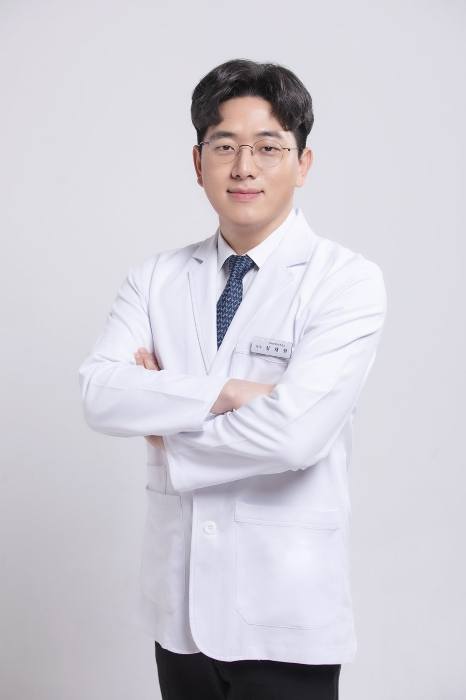

귀 기울여 듣고,
정확하게 살피겠습니다.
환자의 이야기를 충분히 듣고, 정확한 진단과 세심한 진료로 건강한 일상을 되찾을 수 있도록 돕겠습니다.
한 분 한 분에게 진심을 다하는 진료
빠르게 지나가는 진료보다 충분히 듣고 꼼꼼하게 살피는 진료를 지향합니다.
당신의 불편함을 가볍게 여기지 않겠습니다.
작은 증상 하나에도 귀 기울이고, 정확한 진단과 정성을 담은 진료로 신뢰에 보답하겠습니다.
진료 시간
원장 소개

심재현 원장 · 약력
- 현 고려대학교 의과대학 외래교수
- 고려대학교 의과대학 및 동 대학원 졸업, 의학석사
- 고려대학교 안암병원 인턴 및 레지던트 수료
- 해양의료원 이비인후과 과장 역임
- 강남 프레쉬이비인후과 원장
- 잠실 하나이비인후과 원장
- 수면다원검사 정도관리위원회 수면인증의
- 대한이비인후과의사회 두경부 초음파 워크샵 이수
- 대한이비인후과학회 정회원
- 대한후두음성언어의학회 · 대한비과학회 · 대한이과학회 정회원
연수
- 고려대-가톨릭대 Endoscopic Sinus Surgery Course
- 고려대학교 이비인후과 Endoscopic Sinus Surgery Course
- 고려대학교 이비인후과 Temporal Bone Dissection Course
- 고려대학교 이비인후과 Head-and-Neck Surgery Course
귀
목
코
검사장비
정확한 진단을 위해 원내에서 시행하는 검사입니다.
둘러보기
자주 묻는 질문
코골이가 심한데 수면무호흡인지 어떻게 알 수 있나요?
코골이가 있다고 모두 수면무호흡인 것은 아닙니다. 코골이와 함께 자는 중 숨이 멈추는 모습이 보이거나, 낮에 심하게 졸리고 아침에 두통이 있다면 수면무호흡을 의심해 볼 수 있습니다. 내시경으로 코와 목의 구조를 확인하고, 필요하면 수면다원검사를 권해 드립니다.
수면다원검사는 어떤 검사인가요?
잠자는 동안 호흡, 산소포화도, 뇌파, 심전도 등을 측정해 수면무호흡의 유무와 정도를 확인하는 검사입니다. 몸에 센서를 붙이고 평소처럼 자면 되고 통증은 없습니다. 검사 방법과 일정은 상담 시 안내해 드립니다.
양압기는 어떤 장비이고, 한 번 쓰면 계속 써야 하나요?
코에 쓰는 마스크로 일정한 공기압을 보내 잠든 동안 숨길을 열어 주는 장비입니다. 사용 기간은 수면무호흡의 정도와 원인, 체중 변화 등에 따라 달라서 일률적으로 정해져 있지 않으며, 주기적으로 상태를 확인하며 함께 정합니다. 마스크가 불편하거나 적응이 어려우면 조정할 수 있으니 말씀해 주세요.
알레르기성 비염과 감기는 어떻게 구분하나요?
감기는 보통 1~2주 안에 좋아지고 열, 인후통, 누런 콧물이 동반되는 경우가 많습니다. 알레르기성 비염은 재채기, 맑은 콧물, 코 가려움이 반복되고 먼지, 꽃가루, 찬 공기 같은 특정 환경에서 심해지는 경향이 있습니다. 증상이 2주 이상 이어지거나 해마다 반복되면 진료를 받아 보세요.
코막힘이 오래가는데 부비동염(축농증)일 수 있나요?
누런 콧물, 코막힘, 얼굴이 눌리는 느낌, 콧물이 목으로 넘어가는 증상이 열흘 이상 이어지면 부비동염을 의심할 수 있습니다. 코 안을 직접 살펴 상태를 확인하고, 필요하면 저선량 CT로 부비동 구조를 확인합니다.
코에 뿌리는 스프레이를 오래 써도 되나요?
성분에 따라 다릅니다. 코막힘을 빠르게 풀어 주는 혈관수축 성분의 스프레이는 며칠 넘게 계속 쓰면 오히려 코막힘이 심해질 수 있어 정해진 기간을 지켜야 합니다. 비염 치료에 쓰는 다른 성분의 스프레이는 안내에 따라 꾸준히 사용하기도 합니다. 사용 중인 제품을 알려 주시면 안내해 드립니다.
귀에서 소리가 나는 이명이 생기면 병원에 가야 하나요?
잠깐 나타났다 사라지는 이명은 흔하지만, 며칠 이상 계속되거나 청력이 떨어진 느낌, 어지러움이 함께 있으면 진료를 받는 것이 좋습니다. 청력검사 등으로 원인을 살피고, 생활에서 불편을 줄이는 방법을 함께 찾습니다.
갑자기 한쪽 귀가 잘 안 들려요. 어떻게 해야 하나요?
갑자기 한쪽 귀가 잘 들리지 않으면 돌발성 난청일 수 있어 가능한 한 빨리 진료를 받는 것이 좋습니다. 지켜보며 기다리기보다 청력검사로 상태를 먼저 확인해 보세요.
어지러울 때는 어떤 검사를 하나요?
어지러움이 생기는 때와 양상, 지속 시간을 자세히 듣고 귀와 평형 기능을 살핍니다. 필요에 따라 눈의 움직임을 기록하는 비디오 안진검사, 균형검사 등을 시행합니다. 갑작스러운 안면 마비나 말이 어눌해지는 증상, 심한 두통이 함께 있으면 바로 응급실을 찾아 주세요.
귀가 아프고 분비물이 나와요. 어떤 질환인가요?
귀의 통증, 가려움, 분비물, 먹먹함은 외이도염이나 중이염에서 흔히 나타납니다. 귓속을 직접 살펴 염증의 위치와 정도를 확인한 뒤 증상에 맞는 치료를 안내합니다. 면봉이나 손으로 귀를 자주 만지면 증상이 심해질 수 있으니 삼가 주세요.
귀지는 파는 것이 좋은가요?
귀지는 귀를 보호하는 역할을 하고 대부분 저절로 밖으로 밀려 나옵니다. 면봉으로 자주 파면 귀지가 더 안쪽으로 밀리거나 외이도에 상처가 날 수 있습니다. 귀가 먹먹하거나 귀지가 쌓인 느낌이 있으면 병원에서 확인하고 제거하는 것이 안전합니다.
중이염이 오래가면 환기관 삽입을 하나요?
중이염이 오래 지속되거나 반복되어 청력과 귀 상태에 영향을 줄 때 환기관 삽입을 하기도 합니다. 고막과 청력 상태, 지속 기간을 확인한 뒤 필요 여부를 상담해 드립니다.
목에 이물감이 계속 있어요.
목 이물감은 코 뒤로 넘어가는 분비물, 역류, 인후두의 염증 등 여러 원인으로 생길 수 있습니다. 후두내시경으로 인두와 후두를 확인하고, 필요하면 경부 초음파로 목 안쪽 구조도 살핍니다. 음식을 삼키기 어렵거나 통증, 체중 감소, 목의 혹이 함께 있으면 빨리 진료를 받으세요.
기침이 몇 주째 낫지 않아요.
8주 이상 이어지는 기침을 만성 기침으로 봅니다. 코 뒤로 넘어가는 분비물, 역류, 알레르기, 천식 등 원인이 다양해 하나씩 살펴야 합니다. 숨 쉴 때 쌕쌕거리는 소리가 나거나 밤이나 새벽에 심해진다면 꼭 말씀해 주세요. 피가 섞여 나오거나 숨이 차면 바로 진료를 받으세요.
목소리가 쉬었는데 병원에 가야 하나요?
감기나 목소리를 많이 쓴 뒤에 쉰 목소리는 며칠 안에 좋아지기도 합니다. 2~3주 이상 계속되거나 목소리가 자주 갈라지고 쉽게 피로해진다면 후두내시경으로 성대 상태를 확인하는 것이 좋습니다.
목에 혹이 만져져요. 어떤 검사를 하나요?
목에서 만져지는 혹은 림프절, 갑상선, 침샘 등 여러 구조에서 생길 수 있습니다. 방사선 없이 경부·갑상선 초음파로 혹의 위치와 모양을 확인하고, 필요하면 추가 검사를 안내합니다. 혹이 점점 커지거나 2주 이상 줄지 않으면 진료를 받아 보세요.
코피가 자주 나요. 어떻게 해야 하나요?
코 안이 건조하거나 코를 자주 만지는 습관, 비염 등으로 코피가 나는 경우가 많습니다. 코피가 날 때는 앉아서 고개를 살짝 숙이고 콧방울을 10분 정도 눌러 주세요. 자주 반복되거나 잘 멈추지 않으면 코 안을 살펴 원인을 확인해야 합니다.
청각장애 진단은 어떻게 받나요?
순음·어음청력검사 3회(2~7일 간격)와 청성뇌간반응검사(ABR)를 시행하고 장애진단서를 발급합니다. 장애진단 검사를 예약하시면 첫날 추후 두 번의 검사 일정을 함께 잡아 드립니다. 재검안내를 받은 분들도 가능합니다.
진료시간과 휴진일은 어떻게 되나요?
평일은 09:00~19:00, 토요일은 09:00~13:30에 진료하고 일요일과 공휴일은 휴진합니다. 임시 휴진이나 단축 진료는 홈페이지 첫 화면의 달력에서 확인하실 수 있습니다.
주차는 가능한가요?
건물 측면에서 발렛 주차가 가능하며 비용은 4,000원입니다. 병원은 서울특별시 강남구 봉은사로 465 아이타워 5층에 있습니다.
일반적인 건강 정보이며 개인의 진단과 치료를 대신하지 않습니다. 증상이 있으면 진료를 받아 주세요.